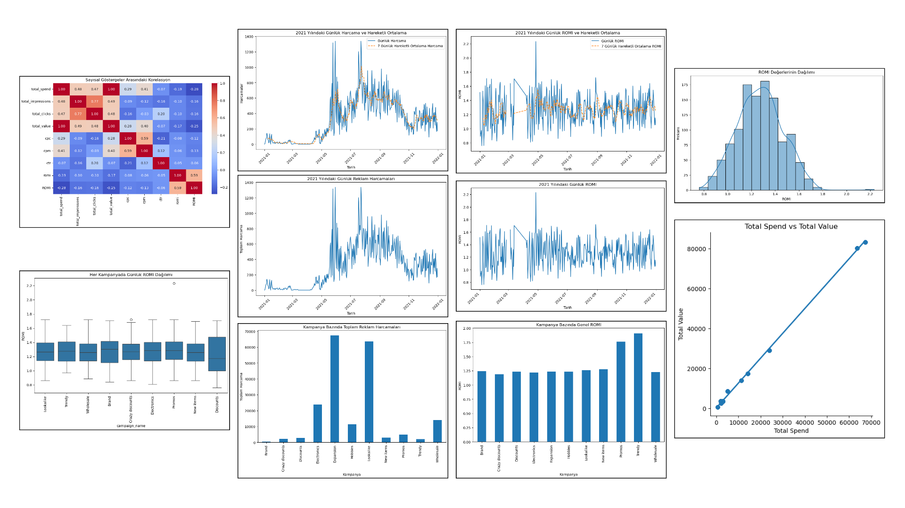

6. Proje: Facebook Reklam Performans Analizi (Python ile)
💡 Açıklama
Bu projede, 2021 yılı boyunca Facebook üzerinden yürütülen reklam kampanyalarının etkinliğini analiz ettim. Günlük reklam harcaması ve yatırım getirisi (ROMI) gibi temel performans göstergeleri üzerinden pazarlama verilerini görselleştirdim.
📌 Ana hedef, harcamaların zaman içindeki değişimini ve bu harcamaların ne ölçüde gelir yarattığını ortaya koymaktı.
Özellikle yıl içinde hangi dönemlerde daha verimli sonuçlar alındığı, hangi kampanyaların fazla harcama yapmasına rağmen düşük geri dönüş sağladığı gibi kritik bulgular öne çıktı.
Analiz sonucunda pazarlama stratejilerinin zamanlama, bütçe dağılımı ve kampanya verimliliği açısından yeniden değerlendirilmesi önerilmektedir.
🧠Teknik Analiz
- Pandas ile veri ön işleme yapıldı: tarih formatı düzenleme, yıl filtreleme
- Günlük total_spend ve ROMI (revenue / spend) hesaplandı
- 7 günlük hareketli ortalamalar kullanılarak volatilite azaltıldı
- Matplotlib ile tüm analizler grafikleştirildi
- Kampanya bazlı harcama karşılaştırması yapıldı
Sonuçlar, ROMI’nin yüksek olduğu dönemlerde daha az harcama yapıldığını gösterdi. Bu da pazarlama yatırımının verimli zamanlara odaklanması gerektiğini ortaya koydu.
Kullanılan Araçlar:
Python, Pandas, Matplotlib